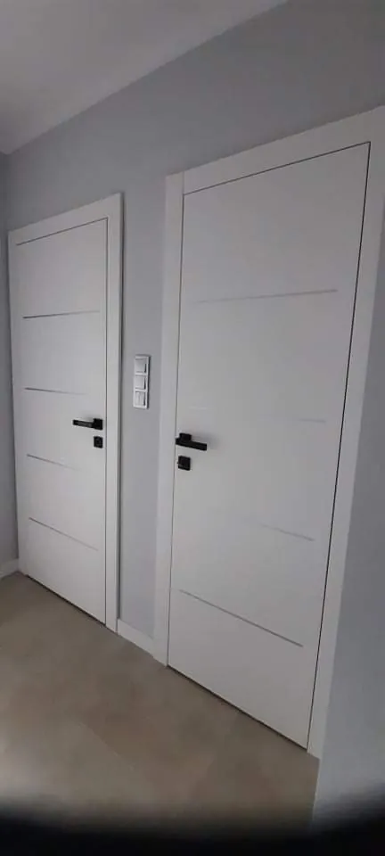
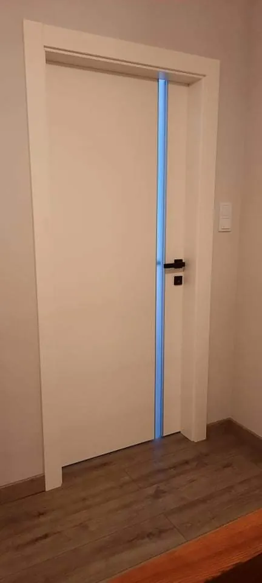
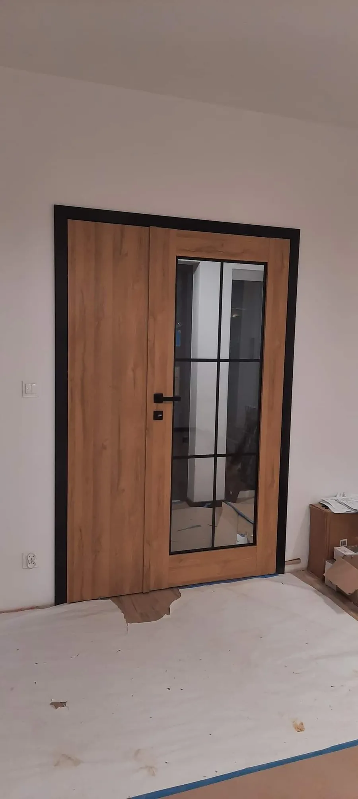
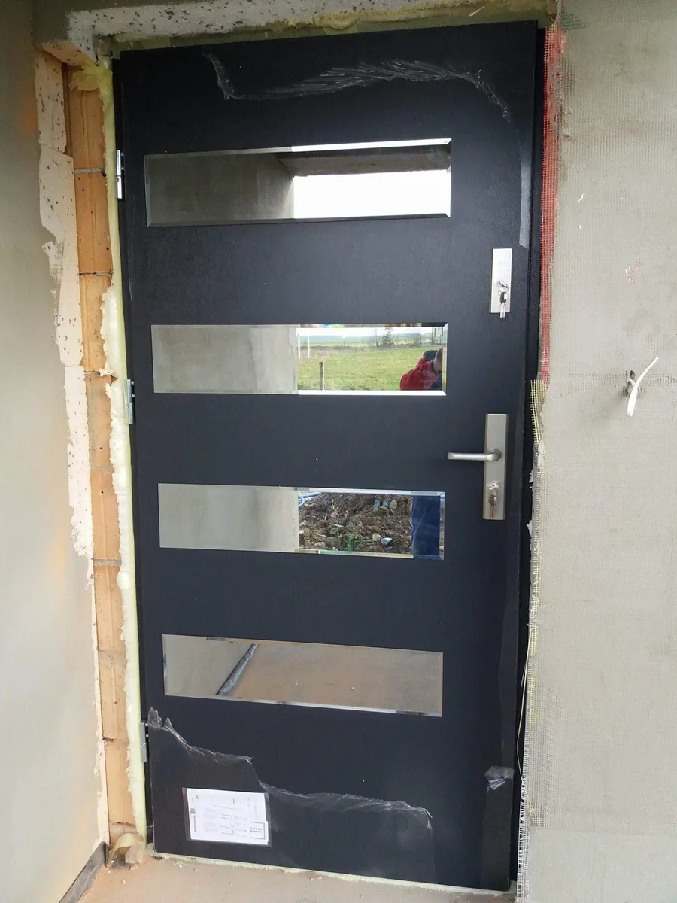

Drzwi w Głogowiez pomiarem i montażem
Wewnętrzne, zewnętrzne, przesuwne i do mieszkań. Sprzedajemy, mierzymy, przywozimy i montujemy – od 2017 roku.
Umów pomiarDrzwi wewnętrznew Głogowie
Do pokoi, łazienki i kuchni: gładkie, frezowane, ramiakowe i z przeszkleniem. W bieli, okleinach drewnopodobnych, w szarościach i z czarną ościeżnicą.
- Przylgowe i bezprzylgowe
- Ościeżnice regulowane i stałe
- Tuleje lub podcięcie wentylacyjne do łazienki
- Klamki, zamki i wkładki do kompletu


Rewersyjne, ukrytei łamane
Drzwi, które mają zlewać się ze ścianą albo zmieścić tam, gdzie zwykłe skrzydło blokuje przejście. Przy tych modelach o efekcie decydują milimetry, dlatego zawsze zaczynamy od pomiaru.
- Rewersyjne – skrzydło licuje ze ścianą
- Ukryte – do pomalowania na kolor ściany
- Łamane – do wąskich korytarzy i spiżarni


Drzwi szklanei loftowe
Szkło w czarnej ramie ze szprosami doświetla przedpokój i oddziela kuchnię, nie zamykając przestrzeni. Pasuje do jasnego dębu, betonu i białych ścian.
- Skrzydła całoszklane
- Rama ze szprosami w stylu loft
- Szkło przezroczyste i matowe


Drzwi przesuwnei systemy przesuwne
Skrzydło przesuwa się wzdłuż ściany albo chowa w niej, zamiast otwierać się w pokój. Rozwiązanie do garderoby, małej łazienki i między salonem a kuchnią.
- Systemy naścienne z widoczną szyną
- Kasety chowane w ścianie
- Skrzydła pełne i przeszklone


Drzwi do mieszkaniaw bloku z montażem
Wymiana drzwi wejściowych w bloku to zwykle wymiana całego kompletu z ościeżnicą. Pomożemy dobrać model z odpowiednią izolacją akustyczną i klasą zabezpieczeń, a nasza ekipa go zamontuje.
- Wizjer, zamki i wkładki o podwyższonej klasie
- Wyciszenie od klatki schodowej
- Kolory pasujące do drzwi wewnętrznych


Drzwi zewnętrznez montażem
Do nowego domu i do wymiany starych. Jedno- i dwuskrzydłowe, z przeszkleniem, długim pochwytem albo klasyczne. Osadzamy je w stanie surowym albo w wykończonej elewacji.
- Drzwi ocieplane do domów jednorodzinnych
- Modele dwuskrzydłowe i z doświetlem
- Montaż z pianką, taśmami i regulacją okuć


Przylgowe, bezprzylgowe,rewersyjne – różnice
Najczęstsze pytanie w salonie. Tak wyglądają różnice w skrócie.
| Rodzaj | Jak wygląda | Zawiasy | Kiedy wybrać |
|---|---|---|---|
| Przylgowe | Skrzydło nachodzi zakładem na ościeżnicę | Widoczne | Klasyczne wnętrza, rozsądny budżet |
| Bezprzylgowe | Skrzydło licuje z ościeżnicą, gładka płaszczyzna | Ukryte | Nowoczesne aranżacje, minimalizm |
| Rewersyjne | Od strony otwierania skrzydło licuje ze ścianą | Ukryte | Gdy ościeżnica ma zniknąć z jednej strony |
| Ukryte | Skrzydło zlicowane ze ścianą, do malowania | Ukryte | Drzwi niewidoczne w ścianie |
| Przesuwne | Skrzydło jedzie po szynie lub chowa się w ścianie | Brak – wózki i prowadnica | Mało miejsca na otwieranie skrzydła |
Nie wiesz, który rodzaj pasuje do Twojego mieszkania? Przyjdź do salonu przy ul. 1 Maja 16 – pokażemy je obok siebie.
Pytania o drzwi
Odpowiedzi na to, o co klienci pytają nas przy ladzie i przez telefon.
Co to znaczy, że drzwi są bezprzylgowe?
Skrzydło drzwi bezprzylgowych po zamknięciu licuje z ościeżnicą – nie ma wystającego zakładu (przylgi), a zawiasy są ukryte. Drzwi wyglądają gładko i nowocześnie. Przylgowe mają zakład, który nachodzi na ościeżnicę, i widoczne zawiasy.
Drzwi przylgowe czy bezprzylgowe – co wybrać?
Przylgowe są prostsze i zwykle tańsze, dobrze sprawdzają się w klasycznych wnętrzach. Bezprzylgowe dają gładką, jednolitą płaszczyznę i pasują do nowoczesnych aranżacji. W salonie zobaczysz oba rozwiązania obok siebie i porównasz je na żywo.
Czym są drzwi rewersyjne?
To drzwi montowane odwrotnie niż standardowe: skrzydło otwiera się do wnętrza ościeżnicy, a od strony otwierania licuje ze ścianą. Ościeżnica jest schowana, więc z jednej strony widać tylko gładkie skrzydło.
Czy przed zamówieniem robicie pomiar?
Tak. Montaż poprzedzamy pomiarem otworów u klienta. Dzięki temu zamawiamy właściwe wymiary skrzydeł i ościeżnic, a na montażu nie ma niespodzianek.
Czy montujecie drzwi kupione w innym sklepie?
Pomiar, transport i montaż wykonujemy dla produktów kupionych w naszym salonie. Wtedy odpowiadamy za całość – od wyboru modelu po regulację okuć.
Czy dojeżdżacie poza Głogów?
Tak. Pracujemy w województwach dolnośląskim, lubuskim i wielkopolskim, m.in. w Sławie i Wschowie. Zadzwoń, a potwierdzimy dojazd do Twojej miejscowości.
Czy mogę zamówić drzwi przez telefon?
Jeśli byłeś już w salonie i masz wybrane produkty, możesz zamówić je telefonicznie lub mailowo, bez ponownej wizyty.
Wybrałeś drzwi? Zmierzymy otwory
Zadzwoń albo napisz – ustalimy termin pomiaru.